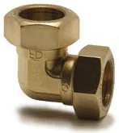

Złączki skręcane Kuterlite
Mosiężne złączki zaciskowe z pierścieniem do rur miedzianych. Montaż kluczem, bez lutowania i zaciskarki. Armatex jest oficjalnym przedstawicielem Pegler Yorkshire w Polsce.
- Indeksy
- 246
- Średnice
- 8–54 mm
- Producent
- Pegler Yorkshire



Komu to sprzedasz i jak.
- Kto kupuje w Twojej hurtowni
- Serwis i podłączenia urządzeń: kotłów, podgrzewaczy i armatury. Klasyczny towar ladowy z rotacją przez cały rok.
- Argument sprzedażowy
- Jedna marka na miedź 8–54 mm, razem z zaworami i częściami zamiennymi w tym samym systemie.
Linie i produkty w systemie
Źródło: cennik Kuterlite, październik 2024


Co warto wiedzieć.
Odpowiedzi według dokumentacji producenta. Resztę wyjaśni handlowiec.
Zadzwoń: 513 191 502Co obejmuje seria K900 Pro?
Złączki, kolana, trójniki i przejścia GW/GZ do rur miedzianych 8–54 mm (na armatex.pl jako KN 900). Do tego zawory z końcówkami zaciskowymi oraz osobno nakrętki i pierścienie.
Czy montaż wymaga narzędzi?
Tylko kluczy. Pierścień zaciska się na rurze przy dokręcaniu nakrętki, bez lutowania i zaciskarki.
Czy w systemie są zawory?
Tak: kurki i zawory z końcówkami zaciskowymi w średnicach 15–28 mm.
Jak pakowane są złączki?
Każda pozycja ma w cenniku producenta dwa opakowania zbiorcze, na przykład złączka prosta K910X 15 mm: 5 i 150 sztuk.
Zapytaj o wycenę na złączki skręcane Pegler Yorkshire.
Ceny hurtowe, dostępność i terminy dostaw przygotujemy w ciągu jednego dnia roboczego.
Pozostałe systemy
Wszystkie systemy 01 · Besco
01 · BescoZłączki zaprasowane
Gutpress Copper w profilach V i M, linie gazowe, Gutpress Carbon Steel, stal nierdzewna INOX i Gutpress Zawory Kulowe V i M.
1 583 indeksy · 12–168,3 mm Zobacz → 02 · Pegler Yorkshire
02 · Pegler YorkshireZłączki na wcisk
Tectite Classic, Pro, 316 i Carbon oraz zawory na wcisk. Montaż bez narzędzi i ognia.
ok. 530 indeksów · 10–54 mm Zobacz → 04 · Besco
04 · BescoZłączki lutowane
Kształtki EN 1254 serii 4000 i 5000, calowe ANSI B16.22 i G-size do 80 bar.
893 indeksy · 6–108 mm Zobacz →